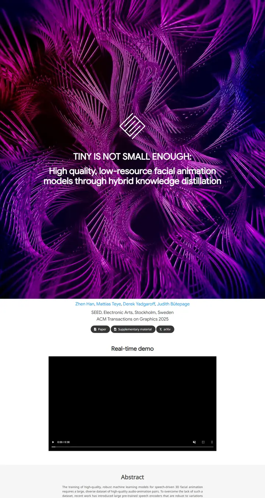

Tiny is not small enough: High-quality, low-resource facial animation models through hybrid knowledge distillation
A studio title card: white headline type floating over a looping swirl of magenta and violet wire, then a quiet gray paper underneath.

Checked against the rendered page. Real-time demo video renders as a black frame (no autoplay attribute, empty poster). Cover height is 60vh, so the full-page shot shows a taller cover than the 1440x900 render.
Why it is here
Full-bleed generative-art hero with a centred logo and title. It is the only cinematic, poster-like opener in the pool, and the clean centred metadata below it follows through. One flaw is that the demo video was captured as a black frame.
Overview
Color Palette
Typography
Google Sans
Tiny is not small enough: High-quality, low-resource facial animation
Abstract · Method · Results · BibTeX — 0123456789
Noto Sans
Tiny is not small enough: High-quality, low-resource facial animation
Abstract · Method · Results · BibTeX — 0123456789
Spacing & Shape
Page Modules
Guidelines
More like this

GAMEBoT: Transparent Assessment of LLM Reasoning in Games
A tidy game-arena scoreboard: a mascot crest over a navy title, then cool grey-blue gradient bands holding news cards and violet-headed score tables.

InstructPart: Task-Oriented Part Segmentation with Instruction Reasoning
A lab notebook in grey and white stripes, where the title marks its own key words in teal and a dashed-panel kettle explains the task before you read a line.

Symmetrical Visual Contrastive Optimization: Aligning Vision-Language Models with Minimal Contrastive Images
A two-color argument: cyan means the matching image, orange the mismatched one, and that code runs unbroken from the prose highlights into every figure across alternating grey and white bands.

Slamming: Training a Speech Language Model on One GPU in a Day
A one-chart argument: a big annotated scaling plot sits where the teaser video would be, then a grey abstract and a quiet grid of audio players tagged by GPU budget.

Peeking Ahead of the Field Study: Exploring VLM Personas as Support Tools for Embodied Studies in HCI
A field notebook taped open on a white desk: a tall soft-gray headline, a long line of sky-blue names, and a salmon-to-sand storyboard that explains the study in three panels.

Reflection Separation from a Single Image via Joint Latent Diffusion
A pane of night glass you can wipe clean with one drag.